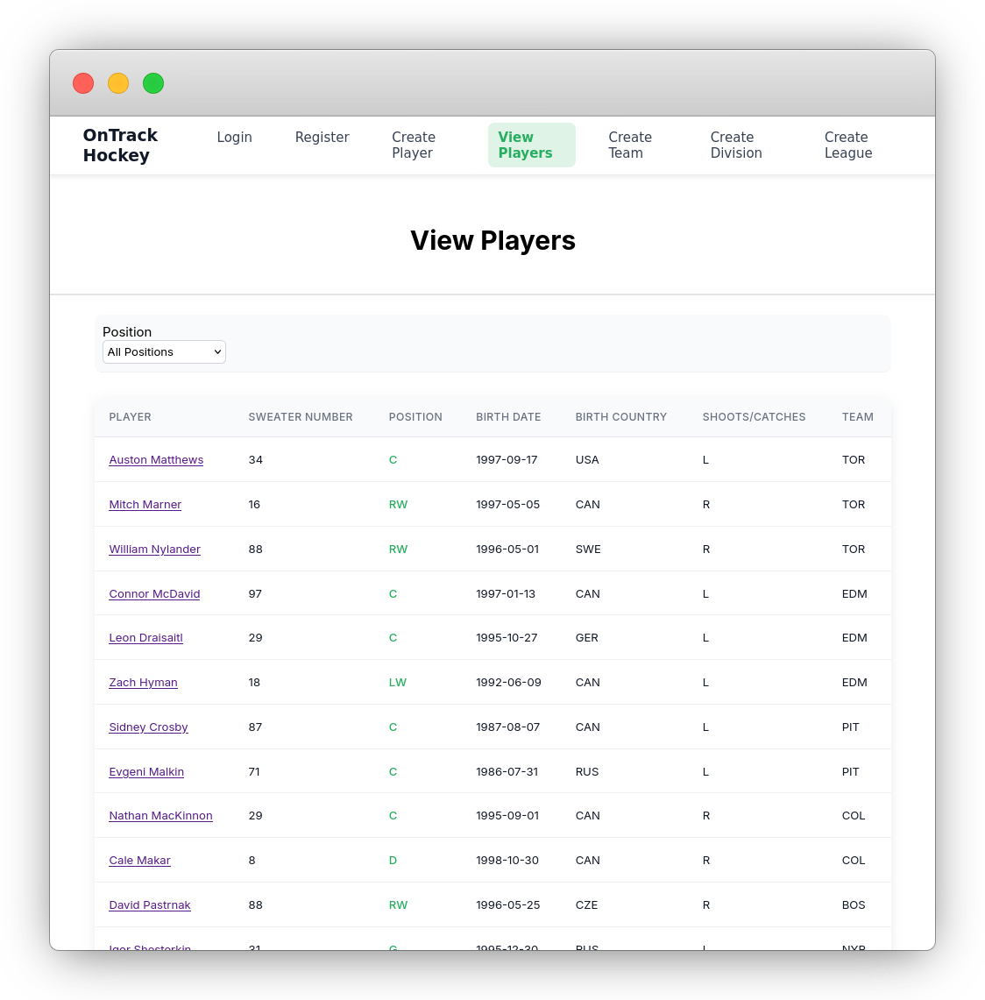

OnTrackHockey
Hockey SMS (Sports Management System)
- On-Track-Hockey is a sports management system for organizing and managing hockey data including players, teams, and leagues.
- The project is designed as a modern, containerized application with a clean separation between frontend, backend, and database layers.

v0.10screenshot of players list
Stack
├──◈ db # postgresql
├──◈ backend # go
└──◈ frontend # angular
Status
Active development
Getting Started
Prerequisites
- Docker & Docker Compose
or run from source
- Go
- Node.js
- PostgreSQL
Run with Docker (recommended)
docker compose up --build
Frontend: http://localhost:8080
Backend: http://localhost:3000
Contributing
Contributions are welcome, but please follow these guidelines:
- Keep pull requests small and focused on a single issue.
- Do not submit large AI-generated pull requests.